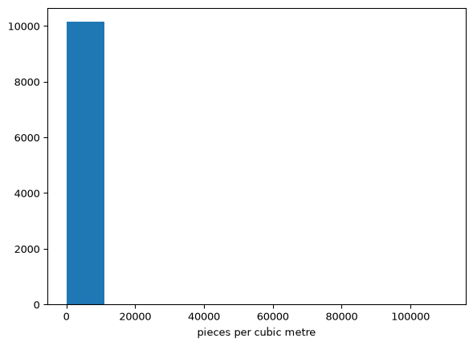
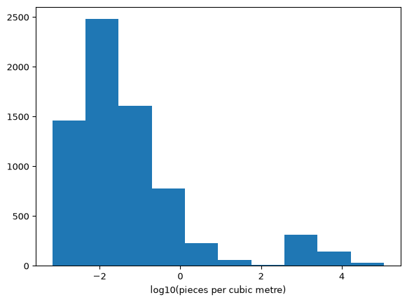

Work the exercise first, then come here. The code below is one correct answer, not the only one. If your code looks different but produces the same numbers, you were right.
The written answers matter more than the code. You can already tell whether your code ran. What you cannot check on your own is whether you read the result correctly, and that is what the green Answer boxes are for. Compare your markdown cells against them.
import pandas as pdimport numpy as npimport matplotlib.pyplot as plturl ='https://eds-217-essential-python.github.io/data/marine_microplastics.csv'df = pd.read_csv(url, parse_dates=['Date'], date_format='%m/%d/%Y %I:%M:%S %p')df.shape
(16245, 22)
Part 1: Get your bearings
1. How many rows and columns? Display the first few rows.
Code
print(df.shape)df.head()
(16245, 22)
OBJECTID
Oceans
Regions
SubRegions
Sampling Method
Measurement
Unit
Density Range
Density Class
Short Reference
...
Organization
Keywords
Accession Number
Accession Link
Latitude
Longitude
Date
GlobalID
x
y
0
10008
Atlantic Ocean
NaN
NaN
Grab sample
0.020000
pieces/m3
0.005-1
Medium
Barrows et al.2018
...
Adventure Scientist
Adventure Scientist/Citizen Science
211009
https://www.ncei.noaa.gov/access/metadata/land...
-58.428300
-64.1640
2017-02-03
1e5b8e71-037b-4887-a276-f1e4552acb1f
-64.1640
-58.428300
1
8680
Atlantic Ocean
NaN
NaN
Grab sample
0.008000
pieces/m3
0.005-1
Medium
Barrows et al.2018
...
Adventure Scientist
Adventure Scientist/Citizen Science
211009
https://www.ncei.noaa.gov/access/metadata/land...
-51.308200
-60.5467
2013-11-17
a40f7f7c-1025-4aac-ad16-ee4cba196870
-60.5467
-51.308200
2
13257
Pacific Ocean
NaN
NaN
Manta net
0.019886
pieces/m3
0.005-1
Medium
Faure et al.2015
...
Oceaneye Association, Switzerland
Oceaneye Association; Citizen Science
276422
https://www.ncei.noaa.gov/access/metadata/land...
-51.826667
-72.5750
2015-12-26
febf79b8-7e2c-46e6-bc15-e08492ec2029
-72.5750
-51.826667
3
9676
Atlantic Ocean
NaN
NaN
Grab sample
0.018000
pieces/m3
0.005-1
Medium
Barrows et al.2018
...
Adventure Scientist
Adventure Scientist/Citizen Science
211009
https://www.ncei.noaa.gov/access/metadata/land...
-31.696000
-48.5600
2015-08-11
a77121b2-e113-444e-82d9-7af11d62fdd2
-48.5600
-31.696000
4
6427
Pacific Ocean
NaN
NaN
Neuston net
0.000000
pieces/m3
0-0.0005
Very Low
Law et al.2014
...
Sea Education Association
SEA
211008
https://www.ncei.noaa.gov/access/metadata/land...
6.350000
-121.8500
2002-12-18
be27c450-02ca-4261-8d89-cae21108e6cc
-121.8500
6.350000
5 rows × 22 columns
✅ Answer
16,245 rows and 22 columns, one row per water sample. Look at what the 22 columns are made of: Measurement, Unit, Latitude, Longitude and Date describe the measurement itself, and Sampling Method, Density Range and Density Class describe how it was taken and how the contributing study classified it. Most of the rest is provenance, meaning who took it, under what accession, from which paper, with which DOI. Two columns, x and y, simply repeat Longitude and Latitude.
A file with more provenance columns than measurement columns is the signature of an assembled archive rather than a designed experiment. NOAA pooled 37 separate studies here, and most of the width of this file exists so that any one row can be traced back to the study it came from. You will use those provenance columns in task 6 and again in Part 6.
2. Run .info(). Which columns are object, and which of those should be something else?
Code
df.info()
<class 'pandas.core.frame.DataFrame'>
RangeIndex: 16245 entries, 0 to 16244
Data columns (total 22 columns):
# Column Non-Null Count Dtype
--- ------ -------------- -----
0 OBJECTID 16245 non-null int64
1 Oceans 15974 non-null object
2 Regions 7996 non-null object
3 SubRegions 588 non-null object
4 Sampling Method 16245 non-null object
5 Measurement 10453 non-null float64
6 Unit 16245 non-null object
7 Density Range 16245 non-null object
8 Density Class 16245 non-null object
9 Short Reference 16245 non-null object
10 Long Reference 16245 non-null object
11 DOI 16245 non-null object
12 Organization 16245 non-null object
13 Keywords 16227 non-null object
14 Accession Number 16245 non-null int64
15 Accession Link 16245 non-null object
16 Latitude 16245 non-null float64
17 Longitude 16245 non-null float64
18 Date 16245 non-null datetime64[ns]
19 GlobalID 16245 non-null object
20 x 16245 non-null float64
21 y 16245 non-null float64
dtypes: datetime64[ns](1), float64(5), int64(2), object(14)
memory usage: 2.7+ MB
✅ Answer
Fourteen columns are object: Oceans, Regions, SubRegions, Sampling Method, Unit, Density Range, Density Class, Short Reference, Long Reference, DOI, Organization, Keywords, Accession Link and GlobalID. Most of those are genuinely text, so object is correct for them.
The one that should be something else is Density Range, which holds numbers written as text: '0.005-1', '30000-40000', '>=10'. You cannot compare or sort those numerically, and Part 5 is about what happens when you try to read them.
Two more are worth naming. Date is datetime64 here only because you passed parse_dates=; without that line it would have been a fifteenth object column, and everything in task 13 would have been impossible. And the mis-typed column runs the other way: Accession Number is int64 but is a label, not a quantity. Task 11 is where you repair it.
3. Run .isnull().sum(). How many columns have gaps? Which are the columns, and how many gaps do they have?
Code
df.isnull().sum()
OBJECTID 0
Oceans 271
Regions 8249
SubRegions 15657
Sampling Method 0
Measurement 5792
Unit 0
Density Range 0
Density Class 0
Short Reference 0
Long Reference 0
DOI 0
Organization 0
Keywords 18
Accession Number 0
Accession Link 0
Latitude 0
Longitude 0
Date 0
GlobalID 0
x 0
y 0
dtype: int64
✅ Answer
Five columns have gaps. In descending order: SubRegions 15,657, Regions 8,249, Measurement 5,792, Oceans 271, and Keywords 18.
Keywords is the one to watch for. It is missing on only 18 rows out of 16,245, so it is easy to skim past in a long column of zeros, and it is the one gap that task 7 leaves behind. Read every line of the output rather than only the large numbers at the top of it.
Notice also that the largest gap is not the important one. SubRegions is missing on 96 percent of rows and costs you nothing, because you were never going to analyse by sub-region. Measurement is missing on 36 percent, and it is the column every later question uses.
4. Oceans is missing on 271 rows and Measurement on 5,792. Are those the same rows? How do you know?
Code
# The 271 rows missing an ocean are all rows that are also missing a measurement:# filtering out the missing measurements leaves nothing missing an ocean.measured = df.dropna(subset=['Measurement'])print(measured.shape)print(measured['Oceans'].isnull().sum())
(10453, 22)
0
✅ Answer
Not the same rows, but the 271 rows missing an ocean are entirely contained in the 5,792 missing a measurement. Dropping the rows with no Measurement leaves 10,453 rows, and in those 10,453 rows Oceans is missing zero times. Every row that lacks an ocean also lacks a measurement.
The zero count is how you know, and the logic is worth being precise about. The test is one-directional: it proves the Oceans gaps are a subset of the Measurement gaps, and it says nothing about the other 5,521 rows that have no measurement but do have an ocean.
The practical consequence is that you get the Oceans column cleaned for free. Once you handle Measurement in task 5 you will never need to think about missing oceans again.
Part 2: Decide what to keep
5. Use .dropna() with subset= to keep only the rows with a Measurement. How many rows are left, and what fraction of the file is that?
10,453 rows, which is 64.3 percent of the file. One line removed 5,792 rows, more than a third of everything you downloaded. Printing the shape after every step is how we notice.
Now compare that with what a bare .dropna() would have done. Bare .dropna() removes any row with a null anywhere, and SubRegions is null on 15,657 rows, so it would have left you 588 rows, 3.6 percent of the file. The subset= argument is the difference between keeping two-thirds of your data and keeping a twenty-eighth of it.
6. Run df['Unit'].value_counts() now and compare it with the counts below, which are what the same line gave before task 5: pieces/m3 10,178, pieces/10 mins 5,792, pieces kg-1 d.w. 275. What did that one line cost you, and which sampling programme did the rows you lost belong to? (Check Sampling Method and Organization on the rows you removed, if you want to be sure.)
It cost you an entire unit. Before task 5 the counts were pieces/m3 10,178, pieces/10 mins 5,792, pieces kg-1 d.w. 275. Afterwards pieces/10 mins is gone completely, and the 5,792 rows it lost are exactly the 5,792 nulls. Every single row reported in pieces/10 mins had a blank measurement, and no row in the other two units did.
The dropped rows are all one programme: Sampling Method is Hand picking on all 5,792, Organization is University of Texas Marine Science Institute on all 5,792, and the keyword is Nurdle Patrol, a citizen-science beach survey where volunteers count plastic pellets found in ten minutes of walking.
So the null is a fact about a protocol, not sloppy data entry. A count per ten minutes of searching is a real observation, but it is a rate per unit of effort, and there is no volume of water in it to divide by. NOAA left Measurement blank because the field means pieces per cubic metre and these samples have no such value. Dropping them was right, and the reason to know all this is that “we removed 5,792 rows of citizen-science beach data because it was measured on an incompatible scale” is a sentence you can defend, while “we dropped the nulls” is not.
7. Fill the gaps in Regions and SubRegions with 'Unspecified', one column at a time, assigning each result back. Confirm with .isnull().sum() that only Keywords is still missing anything.
OBJECTID 0
Oceans 0
Regions 0
SubRegions 0
Sampling Method 0
Measurement 0
Unit 0
Density Range 0
Density Class 0
Short Reference 0
Long Reference 0
DOI 0
Organization 0
Keywords 18
Accession Number 0
Accession Link 0
Latitude 0
Longitude 0
Date 0
GlobalID 0
x 0
y 0
dtype: int64
✅ Answer
Keywords and its 18 nulls, and nothing else. Going into this step Regions was null on 6,904 rows and SubRegions on 9,865; both are now zero, and every other column reads zero as well. The 18 remaining gaps do no harm, because nothing downstream uses Keywords, but run the confirmation anyway. It is how you know the two .fillna() calls did what you meant, and it is how you would catch it if one of them had been assigned to the wrong column.
'Unspecified' is the right filler here for a reason worth stating. It is accurate. It does not claim the sample came from a region, it records that the region was not reported, and it will show up in a .value_counts() as its own category instead of hiding.
8. In a markdown cell: task 5 removed rows and task 7 kept them. Both were the right decision. Explain in two or three sentences what made them different.
✅ Answer
The difference is whether the missing column is the one you are analysing.Measurement is the variable the whole exercise is about, and there is no defensible way to invent a concentration for a sample that was never measured on that scale, so those rows cannot contribute and have to go. Regions and SubRegions are descriptive labels that none of the calculations in this practice depend on, so a row with a valid measurement and a blank region is still a perfectly good measurement.
The rule to remember: drop on the column you are measuring, fill on the columns you are describing by. Applied here it kept 10,453 rows instead of 588, and the 9,865 rows that lacked a sub-region are most of the data you went on to analyse.
9. Check for duplicated rows. Do it twice: once bare, and once with subset= naming the columns that define a single observation, which here are Latitude, Longitude, Date, Measurement and Unit. Report both numbers and say which one you believe, and why the two differ so much.
Zero bare, 539 with the subset. The zero is not evidence of a clean file. .duplicated() with no arguments asks whether two rows match in all 22 columns, and this file has OBJECTID and GlobalID, both of which hold 10,453 distinct values across 10,453 rows. Two rows can never be identical while they each have a unique key, so bare .duplicated() on a table with an ID column is guaranteed to return zero and tells you nothing.
The subset asks the question you actually meant: did two rows record the same measurement, in the same unit, at the same coordinates, on the same day? 539 rows are flagged, and 360 of those 539 report a measurement of exactly zero.
Which do I believe? The 539 flagged rows, but as a list of candidates rather than a verdict. Two rows at the same place, on the same day, reporting the same number may be a copy, and 326 of the flagged rows come from a single organisation, which is where an ingestion error would show up. They may equally be two genuine replicate tows at one station, and the file has no column that distinguishes those two possibilities. The honest report is “539 rows are indistinguishable on the fields that define an observation, and I would ask the data provider before removing them”, not “the file has 539 duplicates”.
Part 3: Make it comparable
10 and 11. Filter to pieces/m3, and make Accession Number a label.
10,178 rows, which drops the 275 rows reported in pieces kg-1 d.w.. Those are sediment samples, pieces per kilogram of dry sediment, and they were collected with corers and spoons rather than nets. Pieces per kilogram of mud and pieces per cubic metre of water are different physical quantities, and no conversion factor exists between them, so keeping them would mean averaging two things that are not the same thing.
Accession Number changes from int64 to object. It is an archive catalogue number, so the mean of a set of accession numbers is meaningless, but pandas would compute one without complaint if you asked. Converting it to text removes the possibility.
12. The Oceans values all end in the word “Ocean”. Use .str.replace() to make a new column called ocean holding the short name, and check it with .value_counts().
Atlantic 9,039, Pacific 1,050, Arctic 69, Southern 20. Those four sum to 10,178, which is the full row count, so nothing was lost in the replacement and no ocean is missing.
Read the imbalance now, because it is the fact that Part 6 turns on. The Atlantic contributes 89 percent of the samples and the Pacific 10 percent, and there is no Indian Ocean in this table at all. The imbalance is a statement about where research vessels sail out of, not about where plastic is.
13. Add a column called year holding the year each sample was taken, using the supplied line from the setup Field Note. Then run .value_counts() on year. Which single year contributed the most samples? In a markdown cell, say whether the archive is spread evenly across its fifty-one calendar years, and what an uneven spread would mean for anyone who wants to use it to describe a trend.
2014, with 836 samples, 8.2 percent of the file. 2018 is second with 724.
The archive is not spread evenly, and it is not close. The dates run from 1972 to 2022, but only 38 distinct years appear, so 13 years contain no samples at all. The median year contributes 235 samples; 2014 contributes more than three times that. The top five years hold 30 percent of everything.
For anyone wanting a trend, the uneven coverage is disqualifying on its own. A plot of mean concentration against year would move whenever the mix of contributing studies changed, and the mix changes every year. 2014 is mostly Adventure Scientist tows and is 780 Atlantic out of 836; 2018 is led by a single Mexican study that sampled both coasts: of its 370 rows, 220 are Pacific and 150 Atlantic. So a rise from 2014 to 2018 would partly be a rise from the Atlantic to the Pacific and from one net to another. Sampling effort is confounded with year, with ocean, and with method simultaneously. The archive can tell you what has been measured, but it cannot tell you what has changed.
Part 4: The derived columns
14. Run .describe() on Measurement. Write down the median and the maximum. How many orders of magnitude separate them?
Code
samples['Measurement'].describe()
count 10178.000000
mean 219.409152
std 2599.554575
min 0.000000
25% 0.000000
50% 0.007200
75% 0.049937
max 110480.000000
Name: Measurement, dtype: float64
✅ Answer
Median 0.0072, maximum 110,480 pieces per cubic metre, a little over seven orders of magnitude apart (log10 of 110,480 divided by 0.0072 is 7.19).
Two other numbers in that output deserve as much attention. The mean is 219.4, roughly 30,000 times the median, which only happens when a handful of enormous values are dragging the average away from every actual sample. And the 25th percentile is exactly 0.0, so at least a quarter of the samples found no plastic at all.
A column whose middle value is seven-thousandths and whose largest value is six figures is not going to behave on a linear axis, which is what the histogram in task 15 puts on screen.
15 and 16. The histogram, and why it is useless.
Code
counts, edges, _ = plt.hist(samples['Measurement'])plt.xlabel('pieces per cubic metre')plt.show()# plt.hist hands back the bin counts and edges, which is how we read a figure# we cannot see anything in.print('bin width:', edges[1] - edges[0])print('counts per bin:', counts)

bin width: 11048.0
counts per bin: [1.0147e+04 6.0000e+00 1.1000e+01 4.0000e+00 4.0000e+00 3.0000e+00
0.0000e+00 1.0000e+00 0.0000e+00 2.0000e+00]
✅ Answer
Ten equal-width bins across a range of 110,480 makes each bin 11,048 wide, and 10,147 of the 10,178 values fall in the first one. The first bar therefore holds 99.7 percent of the data, and the other nine bars hold 31 samples between them and are too short to see.
The plot is a faithful picture of a linear axis applied to a quantity that varies over seven orders of magnitude, and the single sentence the question wants is that the bins are set by the maximum while nearly every value sits near the minimum.
17. Filter samples to the rows where Measurement is greater than zero, end the line with .copy(), and call it positive. How many samples reported exactly zero pieces? Is zero a measurement or a missing value?
7,091 positive samples, and 3,087 reported exactly zero, which is 30.3 percent of the file.
Zero is a measurement. A net was towed, a known volume of water passed through it, and no plastic was found. A zero is a result, and it is a different kind of statement from the 5,792 rows you dropped in task 5, where no measurement of this kind was ever attempted. The file supports this reading: all 3,087 zeros have a Density Class of Very Low, and 3,003 of them have the Density Range'0-0.0005', so NOAA recorded them as observed values rather than gaps.
The filter in this task is therefore not a cleaning step, and you should not describe it as one. You are removing 30 percent of your real data for an arithmetic reason: np.log10(0) is negative infinity, and task 18 needs finite numbers. Any statement you make about positive from here on is a statement about samples that found plastic, conditional on finding any, and the 3,087 zeros belong in the write-up as their own finding.
18 and 19. The log column, its .describe(), the histogram again, and what the shape shows.
count 7091.000000
mean -1.254441
std 1.502175
min -3.170053
25% -2.188425
50% -1.665546
75% -0.879686
max 5.043284
Name: log10_measurement, dtype: float64
Code
plt.hist(positive['log10_measurement'])plt.xlabel('log10(pieces per cubic metre)')plt.show()

✅ Answer
The values now run from -3.17 to 5.04, with a median of -1.67 and a mean of -1.25, and the whole range is visible at once. Reading those back into the original units: the middle sample holds about 0.02 pieces per cubic metre, the smallest about 0.0007, the largest about 110,000.
The plot shows one thing .describe() did not: the distribution has two peaks. There is a large mode centred near log10 of -2, and then a second, clearly separated cluster between log10 of 3 and 4, holding 372 samples at roughly 1,000 to 10,000 pieces per cubic metre, with an almost empty gap in between. Every number .describe() gives you, the mean, the quartiles, the standard deviation, assumes there is one hump to describe, and reports the average of two populations as though it were the centre of one.
Code
# Going beyond what question 19 asks: where does the upper cluster come from?extreme = positive[positive['Measurement'] >57]print(extreme.shape[0])print(extreme['Sampling Method'].value_counts())
All 489 samples above 57 pieces per cubic metre were collected with a bottle, a bucket or a spoon: PVC cylinder 292, Van Dorn sampler 84, aluminium bucket 57, stainless steel spoon 50, seawater intake pump 5, CTD rosette sampler 1. Not one of them came from a net.
So the second mode is a method and not a place. A neuston net filters hundreds of cubic metres and retains particles above roughly a third of a millimetre; a two-litre bottle filters two thousandths of a cubic metre and its contents are examined under a microscope, so a single fibre in the bottle becomes 500 pieces per cubic metre. The two groups are both correctly reported and they are not measuring the same thing.
You are not expected to have found this yourself. It is here because it is the reason the answer to Part 6 has to be hedged, and because a second mode in a histogram is almost always a second population, which means a second protocol, a second instrument, or a second study.
Part 5: A classifier of your own
20 and 21. Write density_class, test it, and apply it.
Code
def density_class(measurement):"""Label a microplastic concentration in pieces/m3."""if measurement <0.01:return'low'elif measurement <1:return'medium'else:return'high'print(density_class(0.001), density_class(0.5), density_class(50))
my_class
medium 3782
low 2440
high 869
Name: count, dtype: int64
✅ Answer
The three tests return low, medium, high, which is what you want to see before you spend one line of .apply() on 7,091 rows.
Applied, the counts are medium 3,782 (53.3 percent), low 2,440 (34.4 percent), high 869 (12.3 percent). Note what the elif chain does for you: because the branches are checked in order, the elif measurement < 1 line only ever sees values that already failed < 0.01, so you do not need to write 0.01 <= measurement < 1. Each boundary appears exactly once, which is also why the classifier cannot leave a value unlabelled.
22. Now compare your labels with NOAA’s. Filter positive to the rows NOAA labelled 'Medium', and run .value_counts() on my_class for just those rows. Do the same for NOAA’s 'Very Low'.
my_class
medium 3774
low 935
high 325
Name: count, dtype: int64
my_class
medium 8
high 5
Name: count, dtype: int64
✅ Answer
NOAA’s 5,034 Medium rows split into 3,774 of my medium, 935 of my low, and 325 of my high. NOAA’s 13 Very Low rows split into 8 medium and 5 high, with nothing at all in low.
The second result is the one that cannot be explained away. The actual measurements NOAA called Very Low run from 0.111 to 80 pieces per cubic metre. A sample of 80 pieces per cubic metre sits above 93 percent of the positive samples in this archive, in the top 7 percent, and their column calls it very low.
23. Something is wrong, and it is not your function. In a markdown cell, explain what NOAA’s Density Class must actually mean, given that samples they called Very Low fall in your high bin. Then say whether you would use their column in an analysis, and why.
In positive, three of the five class labels are attached to more than one numeric range, so Density Class is relative to the study that contributed the row. Note which table that is: with the zeros filtered out, Very Low keeps only '0-100'. In the full samples table it has two ranges as well, which is what you saw in task 17, and there it is four of five. The table says the rest plainly: Medium is both '0.005-1' and '500-30000'. High is both '1-10' and '30000-40000'. Very High is both '>=10' and '>40000'. Very Low here is '0-100'.
The arithmetic matches exactly. Of the 5,034 NOAA Medium rows, 4,709 have the range '0.005-1' and hold values from 0.005 to 0.996, while 325 have the range '500-30000' and hold values from 705 to 28,320. The 325 rows with the wider range are precisely the ones my classifier called high. Nothing has gone wrong on either side: NOAA is answering “was this sample high or low for its own study”, and my function is answering “was this sample high or low in pieces per cubic metre”. The two questions are different, so they have different answers.
Would I use their column? Only within a single study, never across the archive. Inside one Short Reference it is a useful, expert-assigned relative label. Across the archive it cannot be counted, filtered or grouped, because a value of 80 is Very Low in one contributing paper and would be Very High in another, so “how many high-density samples are there” mixes incompatible scales and returns a number that means nothing. Where I need an absolute comparison, I would use the classifier I wrote, and publish its thresholds so a reader can disagree with them.
The general lesson is that a categorical column inherits the definition of whoever created it, and that definition often does not travel with the file. Before you group by somebody else’s category, find the rule that produced it.
Part 6: The question
24. Build two tables with the filter pattern: the Atlantic samples and the Pacific samples, from positive. Report the row count of each.
Atlantic 6,216, Pacific 799, out of 7,091 positive samples. The split is 87.7 percent Atlantic against 11.3 percent Pacific, so the Atlantic has close to eight times as many samples before either table has been looked at.
25. Run .describe() on Measurement for each. Compare the two medians (the 50% row), and then compare the two means. They will probably tell you two different stories. Which one would you put in a report, and why?
count 6216.000000
mean 282.729748
std 3266.793731
min 0.000676
25% 0.006374
50% 0.019440
75% 0.098790
max 110480.000000
Name: Measurement, dtype: float64
count 799.000000
mean 595.199821
std 1644.030554
min 0.001000
25% 0.010000
50% 0.116665
75% 2.611356
max 21156.558533
Name: Measurement, dtype: float64
✅ Answer
Medians: Atlantic 0.0194, Pacific 0.1167 pieces per cubic metre, so the Pacific is 6.0 times the Atlantic. Means: Atlantic 282.7, Pacific 595.2, so the Pacific is 2.1 times the Atlantic. Same data, same direction, a factor of three difference in how big the effect is.
I would report the median, and say that I am doing so. The mean is not describing a typical sample in either ocean. Only 294 of the 6,216 Atlantic samples, 4.7 percent, are above the Atlantic mean of 282.7, and that mean is roughly 2,900 times the Atlantic 75th percentile of 0.0988. It is an average that fewer than five samples in a hundred reach, with six thousand near-zeros underneath it, and the Atlantic standard deviation of 3,267 is larger than the mean, which is the arithmetic saying so.
The medians are also not the whole story, and the quartiles say why. The Pacific 75th percentile is 2.61 against the Atlantic’s 0.0988, a factor of 26, far larger than the factor of 6 at the median. The two distributions differ more in their upper halves than in their middles, and task 19 already told you what lives in those upper halves.
26. Compare the mean of log10_measurement for each instead. In a markdown cell, say what that comparison is doing that the comparison of raw means was not.
-1.376 for the Atlantic and -0.303 for the Pacific, a difference of 1.07 on a base-10 log scale, so the Pacific typical value is about 11.8 times the Atlantic. Converted back, 10 to the power -1.376 is 0.042 and 10 to the power -0.303 is 0.498 pieces per cubic metre.
Averaging the logs gives every sample equal weight regardless of its size. On the raw scale, one sample of 110,480 counts as much as five and a half million samples of 0.02, so the raw mean is decided by a few rows. On the log scale, a sample ten times above the typical value pulls the average by exactly as much as a sample ten times below it pulls it back. Equal weighting on the log scale is the right weighting for a quantity that varies multiplicatively, which is what the task 18 histogram showed this one does.
The name for 10 raised to the mean of the logs is the geometric mean, and the three comparisons you now have are worth writing down together: means 2.1 times, medians 6.0 times, geometric means 11.8 times. All three say Pacific is higher. Any one of them quoted alone is a choice you owe the reader an explanation for.
27. Before you conclude anything: how many Pacific samples are there, out of how many total? Task 12 counted the oceans in samples, before the zeros came out, so expect a different pair of numbers here. In one sentence, say what you would need to know about how the samples were collected before you would publish a comparison between these two oceans.
Code
print(positive['ocean'].value_counts())# The question is about gear, so count the methods within each ocean.for name in ['Atlantic', 'Pacific']:print()print(name)print(positive[positive['ocean'] == name]['Sampling Method'] .value_counts().head(4))
799 Pacific samples out of 7,091, which is 11.3 percent, and task 12 shows the same imbalance before the zeros were removed: 9,039 Atlantic against 1,050 Pacific.
The one sentence: you would need to know whether the two oceans were sampled with the same gear, because a net and a bottle do not count the same particles.
That is short enough to write in the time you have. The numbers behind it: 4,390 of the Atlantic samples are neuston net tows, while 188 of the 799 Pacific samples, nearly a quarter of them, come from a single study using a PVC cylinder.
Two further things make it worse rather than better. 61 percent of the Atlantic rows come from one organisation, the Sea Education Association, so “the Atlantic” here is largely one long-running programme on one set of transects. And the two oceans were not sampled in the same era: 39 percent of the Atlantic samples were taken before 2000 against 2.8 percent of the Pacific ones, and the median Atlantic sample year is 2003 against the Pacific’s 2015. The comparison in tasks 25 and 26 is therefore between two different sets of instruments, deployed by different groups, in different decades, and it happens to also be between two oceans.
Part 7: Write it up
There is no single right answer here. A strong response cites at least three numbers you computed, names one cleaning decision and what it cost, and states at least one thing the dataset cannot tell the journalist. Here is one that would earn full marks.
✅ A model answer
The short answer is that this dataset does show higher concentrations in the Pacific, and that it is not good enough evidence to print.
Working from NOAA’s marine microplastics archive, I kept the 10,178 samples reported in pieces per cubic metre and set aside the 3,087 that found no plastic at all, which is 30 percent of them and a finding in its own right. Among the 7,091 samples that did find plastic, the median Atlantic sample holds 0.019 pieces per cubic metre and the median Pacific sample 0.117, so the typical Pacific sample is about six times the typical Atlantic one. I would not use the means, which are 283 and 595: only 4.7 percent of Atlantic samples are above the Atlantic mean, so that number describes a few extreme tows rather than the ocean.
The cleaning decision that cost the most was dropping 5,792 rows with no measurement. They were all Nurdle Patrol beach surveys reported as pieces found per ten minutes of searching, and there is no way to convert an effort-based count into a concentration, so a third of the archive was removed at the first step.
What this cannot tell you is whether the difference is the ocean or the instrument. The Atlantic has 6,216 samples to the Pacific’s 799, 61 percent of the Atlantic rows come from one organisation, and every one of the 489 highest readings in the file was taken with a bottle or a bucket rather than a net. There is no Indian Ocean here at all. The file is an archive of where people have sampled, and the garbage patch is not in it as a measurement.
Where the marks are
If you compare your notebook against this key, look for these four things before you look at anything else.
Your task 6 answer names the protocol. The 5,792 nulls are one citizen-science programme reporting pieces per ten minutes, and every row of that programme is null. A markdown cell that says “dropped the missing values” without saying what they were is where the mark is lost.
Your task 23 answer says NOAA is not wrong. The two classifiers disagree because Density Class is relative to each contributing study and yours is absolute. An answer that concludes NOAA made a mistake has read the Density Range table but not understood it.
You treated the 3,087 zeros as data. Filtering them was necessary for np.log10, not for cleanliness, and everything after task 17 describes samples that found plastic.
Your Part 7 answer hedges the ocean comparison on how the samples were collected, and every number in it has a code cell above it that produced it. Quoting a number without the cell that produced it is an easy way to lose marks on this exercise.